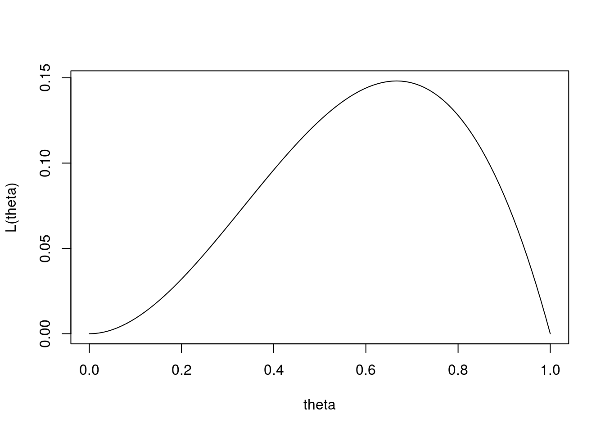
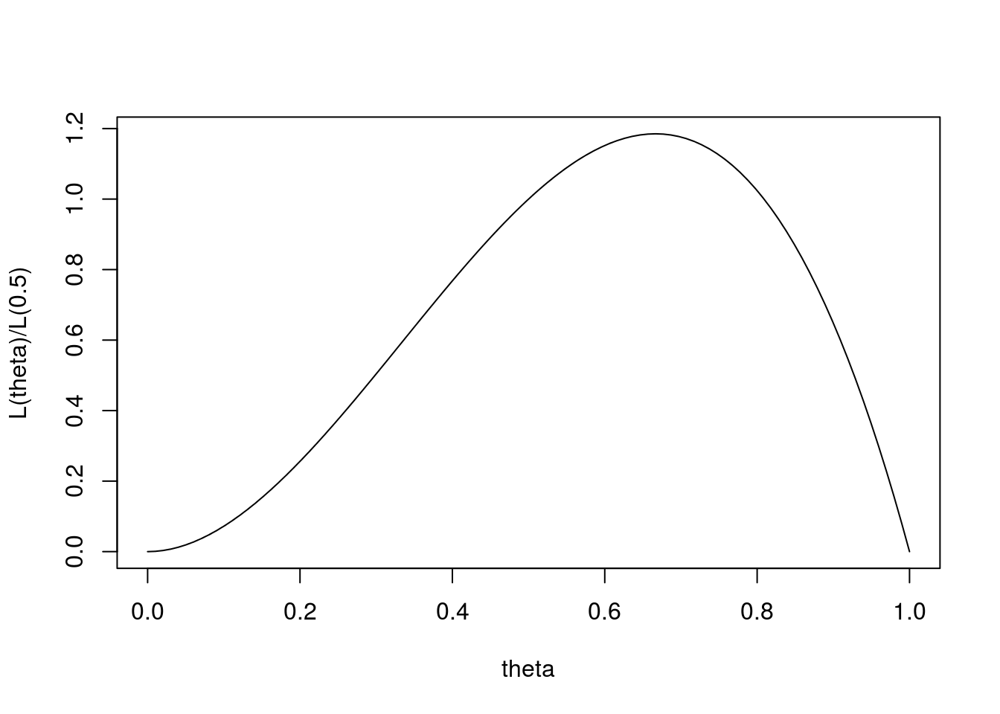

Last updated: 2017-01-02
Code version: 55e11cf8f7785ad926b716fb52e4e87b342f38e1
Be familiar with the concept of a Statistical Model.
The concept of “likelihood” is one of the most important in all of statistics. It plays a central role in performing inference, particularly in parametric inference - that is, in inferring plausible values of some unknown parameter from observed data.
Outside of statistics the term likelihood is generally used as a synonym for probability. However, in statistics it has a specific technical usage. It is therefore important for students of statistics to learn the correct technical use of the term likelihood.
Let \(M\) be a parametric statistical model for a random variable \(X\). Recall that this means that, for each value of a parameter \(\theta\) in a parameter space \(\Theta\), \(M\) defines a distribution \(p(\cdot; \theta)\) for \(X\). Here \(p(\cdot ; \theta)\) is a probability mass function if \(X\) is discrete, and a probability density function if \(X\) is continuous.
The likelihood function (or just “likelihood”) for \(\theta\), given observed data \(X=x\), is defined by \[L(\theta):=p(x; \theta).\]
As should be clear from this definition, the likelihood depends on the observed data \(x\), and it can be useful to make this dependence explicit. To do this it is common to use the notation \(L(\theta; x)\) for the likelihood: \(L(\theta;x):=p(x; \theta)\). [The alternative notation \(L(\theta | x)\) is also sometimes used, but best avoided in this author’s opinion because it invites misinterpreting \(L\) as a conditional distribution of \(\theta\) given \(x\), which it is not.]
The definition above concerns the most common usage of likelihood: that is, the likelihood function for a parametric model. However, likelihood is also sometimes used for simple models. If \(M\) is a simple model, it defines a single distribution for \(X\), \(p(x; M)\) say. In this case we say that the likelihood for \(M\) is a single number, \[L(M; x):=p(x; M).\]
The definition above concerns the likelihood function for a parametric model, which is the most common usage of likelihood. However, likelihood is also sometimes used for simple models. If \(M\) is a simple model, it defines a single distribution for \(X\), \(p(x; M)\) say. In this case the likelihood for \(M\) is a single number, given by \[L(M; x):=p(x; M).\]
Suppose we obtain data by tossing a coin 3 times and recording the outcomes. The possible outcomes are S={HHH,HHT,HTH,HTT,THH,THT,TTH,TTT} where H denotes the coin landing heads and T denotes tails (so, for example, HTH denotes the outcome where the first toss lands heads, the second lands tails, and the third lands heads).
Consider the parametric model which assumes that the tosses are independent, and that at each toss the probability of a head is \(\theta \in [0,1]\). Suppose that the outcome of the experiment is \(x=HTH\). Then the likelihood for \(\theta\) is given by \[L(\theta) = \theta(1-\theta)\theta = \theta^2 (1-\theta).\]
We can plot the likelihood as a function of theta:
theta = seq(0,1,length=100)
L =function(theta){theta^2 * (1-theta)}
plot(theta, L(theta), xlab="theta", ylab="L(theta)",type="l")
There are two important things to note about the likelihood.
First, for any given value of \(\theta\), \(\theta_0\) say, \(L(\theta_0)\) is a measure of how consistent the observed data are with the parameter value \(\theta=\theta_0\). That is, \(L(\theta_0)\) is a measure of support for \(\theta=\theta_0\), with big values indicating stronger support.
However, at the same time, what values of the likelihood correspond to “strong” support or “weak” support depends on the context. In this sense the likelihood is not an “absolute” measure of support. Instead, it turns out that the correct interpretation of the likelihood is as a relative measure of support. In other words, the likelihood ratio \(L(\theta_1)/L(\theta_0)\) measures the relative support for \(\theta=\theta_1\) vs \(\theta=\theta_0\), with large values indicating stronger relative support for \(\theta=\theta_1\). For example, a likelihood ratio of 10 means that the data provide 10 times stronger support for \(\theta=\theta_1\) than for \(\theta=\theta_0\).
Because of this one should focus on likelihood ratios, rather than likelihoods. Indeed, many treatments of likelihood consider the likelihood function to be defined only up to some arbitrary multiplicative constant.
Returning now to the coin-tossing example, we realize that the likelihoods we plotted before could be more interpretable if they were plotted as likelihood ratios. A simple way to turn the likelihood into a ratio is to take the \(L(\theta)/L(\theta_0)\) for some fixed \(\theta_0\). In this case we take \(\theta_0=0.5\), which corresponds to the case of a “fair coin”. Here is the plot:
plot(theta, L(theta)/L(0.5), xlab="theta", ylab="L(theta)/L(0.5)",type="l")
Of course, dividing by a constant has not changed the shape of the likelihood, it has only changed the scale of the \(y\) axis. But the numbers themselves have become at least a little more intepretable. For example, we can see that the value of \(\theta\) that has strongest support from the data (i.e. the one with the largest likelihood, which in this case is \(\theta=2/3\)) has a likelihood that is roughly 1.2 times as big as the likelihood for \(\theta=0.5\).
One might intuitively feel that a factor of 1.2 is not especially noteworthy, and this would be correct. Indeed, this accords with the intuition that if one tosses a coin 3 times, and sees two heads, then this is not strong evidence against the hypothesis that the coin is fair, with equal probability of landing heads and tails. This intuitive notion can be formalized in various ways, including by the use of Wilks’s Theorem and Bayesian analysis.
sessionInfo()R version 3.3.2 (2016-10-31)
Platform: x86_64-pc-linux-gnu (64-bit)
Running under: Ubuntu 14.04.5 LTS
locale:
[1] LC_CTYPE=en_US.UTF-8 LC_NUMERIC=C
[3] LC_TIME=en_US.UTF-8 LC_COLLATE=en_US.UTF-8
[5] LC_MONETARY=en_US.UTF-8 LC_MESSAGES=en_US.UTF-8
[7] LC_PAPER=en_US.UTF-8 LC_NAME=C
[9] LC_ADDRESS=C LC_TELEPHONE=C
[11] LC_MEASUREMENT=en_US.UTF-8 LC_IDENTIFICATION=C
attached base packages:
[1] stats graphics grDevices utils datasets methods base
other attached packages:
[1] rmarkdown_1.1
loaded via a namespace (and not attached):
[1] magrittr_1.5 assertthat_0.1 formatR_1.4 htmltools_0.3.5
[5] tools_3.3.2 yaml_2.1.13 tibble_1.2 Rcpp_0.12.7
[9] stringi_1.1.1 knitr_1.14 stringr_1.0.0 digest_0.6.9
[13] gtools_3.5.0 evaluate_0.9 This site was created with R Markdown